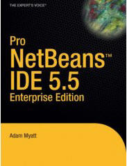
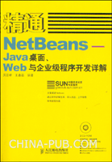

Handy Guides – Books About Developing with NetBeans
August 2007
Although we live in an increasingly web-centric world, there are still
some experiences that cannot be easily replicated online. Leafing
through a good reference book is one of them.
The NetBeans.org site is a useful and dynamic repository of
online articles and tutorials that covers
a wide range of development
topics for multiple levels of users, but recent and past
published books
about NetBeans show that information in hard copy can still be
as rich and as useful as that found online. In fact, books
sometimes offer an advantage over an online database of
tutorials in that they can comfortably contain and relate several
themes to create a comprehensive picture about their subject matter, a
task that isolated tutorials may not always do well.

Another
benefit—a small, yet significant one, some might argue—to
old-fashioned printing that online technology has not completely
perfected yet? Hassle-free portability. Books travel well and a
wireless connection is not needed to use them!
Hardcovers and paperbacks still matter, and luckily for NetBeans
users, each year brings fresh titles that focus on programming with the
NetBeans IDE and Platform, or that feature the use of NetBeans
software. (For example, a book might contain a CD of the IDE.)
This year, two noteworthy reference books about NetBeans that have been
published are the multiple-authored Rich
Client Programming: Plugging
into the NetBeans Platform, and Adam Myatt's Pro
NetBeans IDE 5.5
Enterprise Edition.
Written by three people who know a lot about NetBeans—NetBeans
evangelist Tim Boudreau, Jaroslav Tulach, one of the founders of
NetBeans, and Geertjan
Wielenga, a NetBeans technical writer—the Rich
Client Programming book is a guide to creating desktop Java
applications on top of the improved NetBeans Platform. The wide-ranging
book highlights the advantages of modular development while covering
topics such as using NetBean's productivity features and modular
architecture, creating multi-windowed
applications, integrating web services with NetBeans desktop
applications, and more. 
Similarly, first-hand experience working with the NetBeans
software serves as the basis of Pro
NetBeans 5.5 Enterprise
Edition. Author Adam Myatt, who is also a project leader and
systems analyst for General Electric Global Research, was an Eclipse
user before making
the
switch to NetBeans. Impressed with the straight-forward functionality
of the NetBeans IDE—version 5.0 at the time of his switch—he decided to
write a book about NetBeans for other Java
developers looking for an intuitive-to-use and feature-rich development
environment. Pro NetBeans 5.5
is a broad guide to the IDE, with a special focus on its Enterprise and
Visual Web capabilities. Topics covered include creating web
applications and web services projects, the IDE's UML support
features, EJBs and Java Persistence, refactoring, adding third-party
tools to the IDE, and more. The author also presents real-life case
studies.
More titles about NetBeans are due out in the coming months, with some
set to coincide with the release of NetBeans 6.0 or that will cover the
new features supported in the release. Adam Myatt, for
example, will add a second book to his Pro NetBeans series: Pro
NetBeans IDE 6 Rich Client Platform Edition.
International
publications cannot be overlooked. This year has produced
three books about
developing with the NetBeans IDE in the Indonesian, Chinese and
Portuguese
languages. Additional titles also to come in this area include
language editions of already-published works such as the Rich Client
Programming book and Myatt's Pro
NetBeans 5.5—both to be
published in Chinese. A German
book about the 6.0 platform has an
August publication date.
The growing number of NetBeans titles reflects the favorable position
that NetBeans commands among IDEs today, and as NetBeans continues to
evolve and attract more users, the demand for books about working with
the IDE is sure to rise. This bodes well for all users as adding a book
or two to their library will be another great way of deepening their
knowledge of NetBeans.
Books about NetBeans can be ordered from various online booksellers or
purchased the old-fashioned way—from a local bookstore.
More Information
Visit the NetBeans
Books Page for current and past titles.
Pro NetBeans Site
Interview
and Podcast
with Adam Myatt about Pro
NetBeans 5.5 Enterprise
Edition
Interview
and Podcast
with Geertjan Wielenga about Rich
Client Programming: Plugging into the NetBeans Platform
Upcoming Books
Rich Client Programming: Plugging into the NetBeans Platform (Chinese,
Oct. 07; Spanish)
Pro NetBeans IDE 5.5 Enterprise Edition (Chinese, Sept. 07)
Mastering NetBeans 5.5 (Chinese, Oct. 07)
Have you purchased a book about
NetBeans
recently? Please write a review
about it at online stores (Amazon, et.al), on your blog or in
discussion forums!